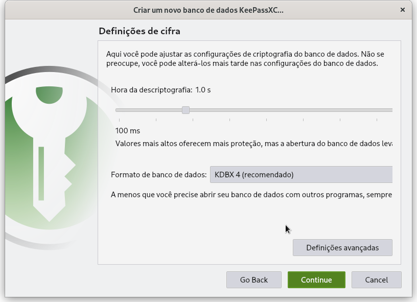
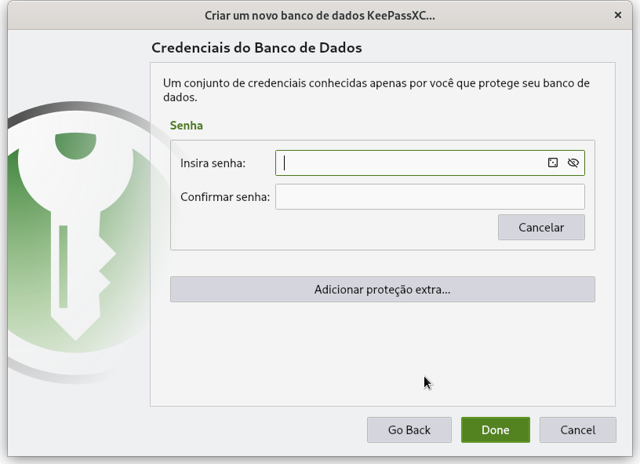
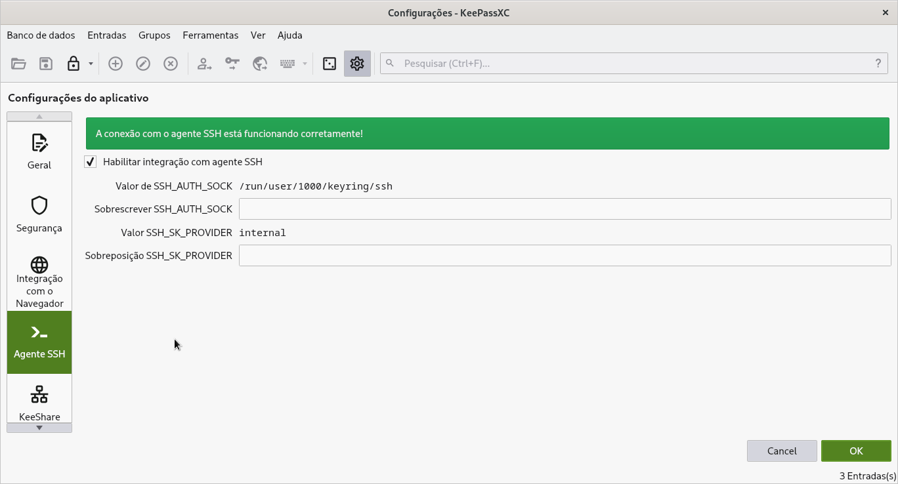
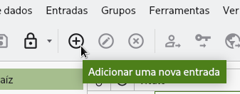
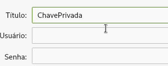
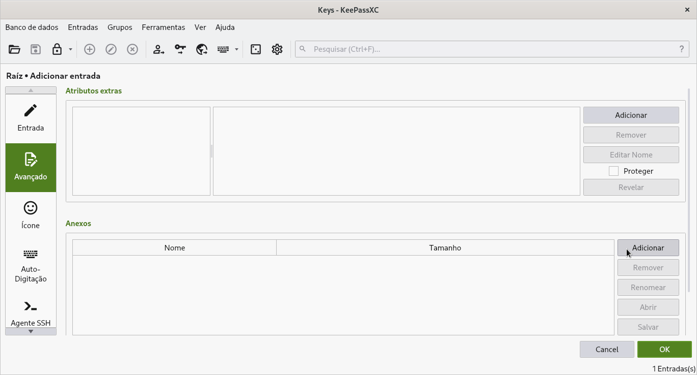
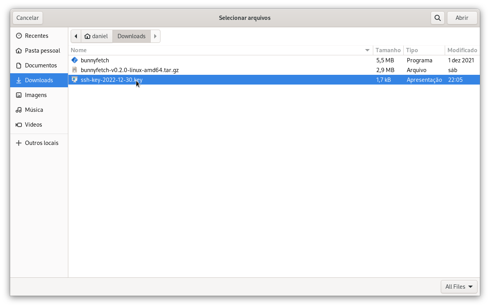
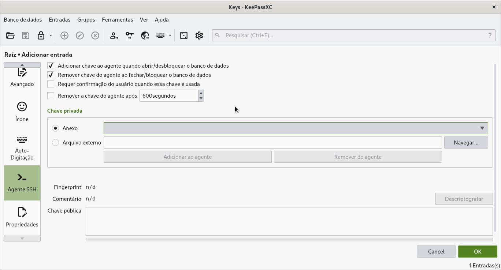
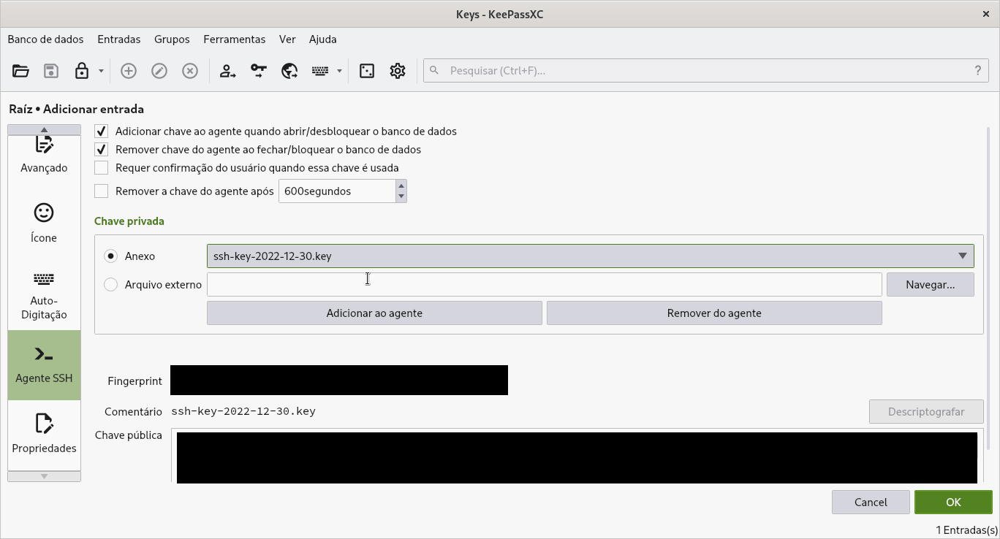

Gerenciado chaves privadas com KeypassXC
← ← ← 30/12/2022, 02:52:59 | Posted by: Daniel Tolentino
Estou experimentando com alguns servidores na nuvem e sempre preciso gerenciar chaves SSH, tenho a opção de fazer upload da minha chave pública para o servidor ou obter a chave privada (só tenho uma chance para fazer isso) e guardar no meu computador. Toda vez que for feita uma conexão é necessário passar o caminho da chave, como ssh -i ~/.ssh/ssh_private.key user@servidor
Se você fizer isso a sua chave estará em uma pasta de fácil acesso e visível, mesmo com senha ainda sim é bom ter um lugar seguro que você possa fazer backup de um arquivo criptografado e não a chave em si.
Há vários pontos positivo desse metódo, como a organização dos arquivos mais sensíveis em um banco criptografado, sem a necessidade de deixar todos em pastas espalhadas pela sua /home. Fácil de manter controle, adicionar, apagar, descrever e organizar via tags, tudo em um só lugar.
Instalando o KeepassXC
Precisaremos do software instalado.
Distros Debian-Based:
sudo apt install keepassxc
Fedora:
sudo dnf install keepassxc
Criando um banco de dados para guardar suas chaves
Agora precisamos criar um banco de dados criptografado. O banco é um arquivo de extensão .kdbx, você pode guardar em um local seguro e abrir em outro dispositivo, de forma segura. Só não deixe isso público, mesmo criptografado você não quer esse arquivo rodando por aí.

Escolha um nome e descrição.

Pode deixar a configuração padrão.
E escolha uma senha complexa e guarde em um local seguro.
Finalize a criação do banco de dados.
Ativar o SSH Agent no KeepassXC
Antes de tudo, o passo mais importante é ativar a integração com o SSH Agent, para que o Keepass seja capaz de invocar a chave, adicionar ao seu enviroment e deixá-la disponível para ser acessada.
Adicionar a chave ao banco de dados
Vamos adicionar a chave ao banco de dados do KeepassXC!
Defina um título para o item.
E agora um dos passos mais legais, adicionar sua chave como anexo!
 Você poderia deletar a sua chave privada da pasta, mas calma, vamos nos certificar que está tudo certo até o final.
Vá até o menu de AgentSSH do item que você está criando:
Clique em "Anexo" e selecione sua chave no menu que irá abrir.
Se a sua tela estiver como está na foto, tudo certo! Agora sua chave está adicionada no DB do KeepassXC. Algumas coisas a considerar: Ative as duas primeiras opções da última tela, e clique para adicionar a chave ao "agente". Clique em "OK", volte para a tela inicial e clique com o botão direito no item, e clique para adicioná-lo ao Agent (ou use o atalho Ctrl + H).
Pronto, agora você pode abrir o terminal, digitar apenas o comando ssh user@servidor, o KeepasXC irá prover a chave privada automaticamente e a conexão será feita.
Se você fechar o KeepassXC ou bloquear o cofre a chave é retirada do SSH Agent e sua conexão será encerrada, isso é por segurança, para que a chave funcione apenas se você desbloquear o banco de dados intencionalmente, assim você pode saber se está seguro ou não.
Pode deletar a chave da pasta "pública", agora ela está segura no banco de dados e é portável!